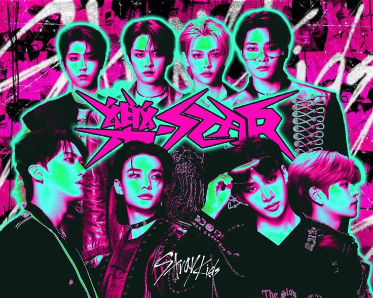
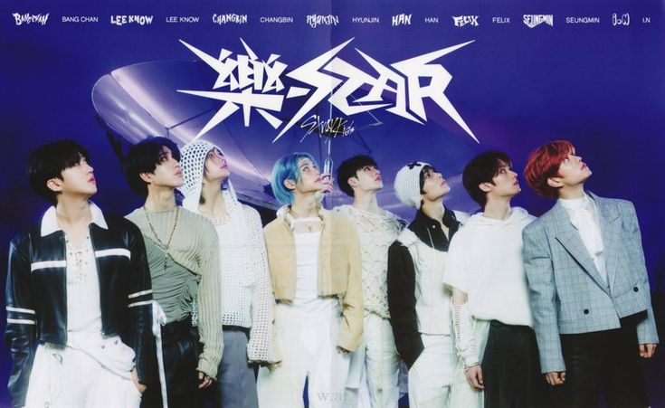

|
 |
El 10 de noviembre de 2023, apenas cinco meses después de 5-STAR, Stray Kids regresó con
su octavo mini álbum 樂-STAR (ROCK-STAR), una era pensada para mostrar su lado más rebelde
y desinhibido. El sencillo principal, "LALALALA", fue compuesto íntegramente por 3RACHA
(Bang Chan, Changbin y Han), el equipo de producción interno del grupo.
El álbum incluyó además temas como "MEGAVERSE", "Leave", "Blind Spot" y "Cover Me", adelantados en su gira "5-STAR Dome Tour" en Seúl. ROCK-STAR representó la confianza de Stray Kids en su propio sonido, sin importar las expectativas externas. |
| Periodo | Octubre - Noviembre 2023 |
| Álbum | 樂-STAR (ROCK-STAR) - 10 de noviembre de 2023 |
| Sencillo principal | "LALALALA" |
| Logro destacado | Octavo mini álbum, compuesto íntegramente por 3RACHA |
